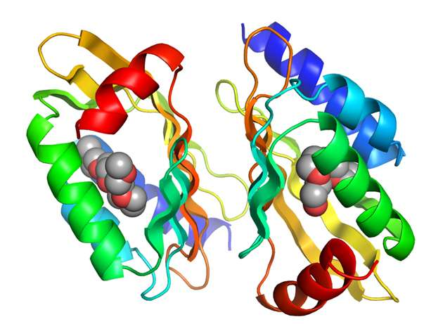

About
in-silico, in-vivo, in-vitro
The biggest problems of our time will be solved at the intersection of basic sciences and AI.
This is a small compendium of inter-disciplinary projects,
some of which have been adopted in non-profit settings.
Explore Project Categories



Bioengineering
Projects involving protein structure, docking and molecular dynamics
Imaging and spatial
Projects using AI on medical imaging data, Augmented Reality organ models, etc.
Connected devices
IoT and assistive systems using sensors and microcontrollers for various applications of .
AI and tech for social good
Various non-profit projects for schools and and healthcare in low-resource, underserved environments.